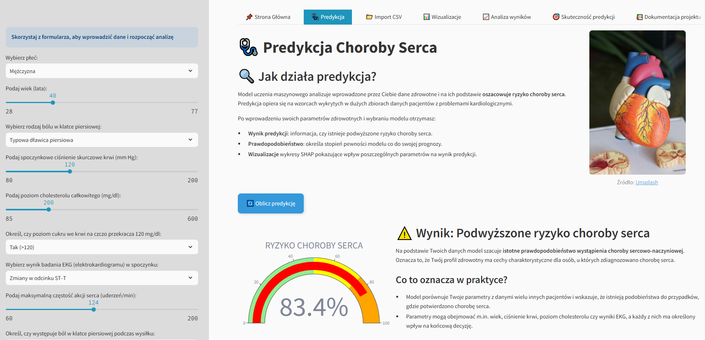

I am studying Computer Science and developing my skills in Data Science and Machine Learning, while maintaining a broad range of technical competencies. In addition to building models, I focus on solid foundations, am proficient in databases (SQL), and have had the opportunity to experience firsthand how an ERP system and IT structure function within a large corporation.
I create my projects with their practical application in mind, ensuring they deliver real value based on data analysis. I am looking for challenges that will allow me to fully utilize my knowledge and analytical approach to solving complex problems within a professional team.
Studiuję informatykę i rozwijam się w kierunku Data Science oraz Machine Learning, dbając przy tym o szerokie kompetencje techniczne. Oprócz budowania modeli, stawiam na solidne podstawy, sprawnie poruszam się w tematyce baz danych (SQL) i miałem okazję poznać od środka, jak funkcjonuje system ERP oraz struktura IT w dużej korporacji.
Swoje projekty tworzę z myślą o ich praktycznym zastosowaniu, tak aby dostarczały realną wartość na podstawie analizy danych. Szukam wyzwań, które pozwolą mi w pełni wykorzystać moją wiedzę i analityczne podejście do rozwiązywania złożonych problemów w profesjonalnym zespole.
I have strong proficiency in Python, including data processing, backend development, and process automation. I design and develop efficient APIs using FastAPI and build interactive applications with Streamlit. I effectively leverage Pandas and NumPy for advanced data analysis and transformation.
Posiadam wysokie kompetencje w zakresie języka Python, obejmujące m.in. przetwarzanie danych, rozwój backendu oraz automatyzację procesów. Projektuję i rozwijam wydajne API z wykorzystaniem FastAPI oraz buduję interaktywne aplikacje w Streamlit. Sprawnie wykorzystuję biblioteki Pandas i NumPy do zaawansowanej analizy i transformacji danych.
I have hands-on experience in the entire ML lifecycle – from data preprocessing, through EDA and feature engineering, to training models using scikit-learn. I create clear visualizations (Matplotlib, Seaborn, Plotly) and ensure model interpretability using Explainable AI techniques like SHAP.
Posiadam doświadczenie w całym cyklu tworzenia rozwiązań ML – od preprocessingu surowych danych, przez EDA i inżynierię cech, aż po trenowanie modeli w scikit-learn. Tworzę czytelne wizualizacje (Matplotlib, Seaborn, Plotly) oraz dbam o interpretowalność wyników z wykorzystaniem technik Explainable AI, takich jak SHAP.
I have knowledge in working with relational databases (MS SQL Server), including querying, data manipulation, and database management. I am comfortable using DDL and DML commands, writing complex queries, and managing database schemas and structures.
Dysponuję wiedzą w zakresie pracy z relacyjnymi bazami danych (MS SQL Server), obejmującą tworzenie zapytań, modyfikację danych oraz zarządzanie strukturą bazy. Swobodnie posługuję się poleceniami DDL i DML, tworzę złożone zapytania oraz efektywnie zarządzam schematami i strukturą danych.
Solid understanding of core Object-Oriented Programming (OOP) principles. Capable of writing foundational C# code for basic applications and academic projects.
Solidne zrozumienie głównych zasad programowania obiektowego (OOP). Potrafię pisać podstawowy kod w C# na potrzeby mniejszych aplikacji i projektów akademickich.
Practical ability to create and deploy responsive websites (like this portfolio) using HTML, CSS, and frameworks like Bootstrap.
Praktyczna umiejętność tworzenia i wdrażania responsywnych stron internetowych (takich jak to portfolio) przy użyciu HTML, CSS oraz frameworka Bootstrap.
Advanced level (B2/C1). Fully comfortable reading technical documentation and communicating effectively in international work environments.
Poziom zaawansowany (B2/C1). Swobodnie czytam dokumentację techniczną i potrafię płynnie komunikować się w międzynarodowym środowisku.

An advanced web application that predicts cardiovascular disease risk using machine learning. Integrated with Explainable AI (SHAP) to provide clear insights into the specific medical parameters that influenced each prediction.
Zaawansowana aplikacja webowa przewidująca ryzyko chorób układu krążenia przy użyciu uczenia maszynowego. Dzięki integracji Explainable AI (SHAP), system wskazuje kluczowe parametry medyczne, które miały decydujący wpływ na wygenerowaną diagnozę.
🔍 Full PreviewPełny PodglądAnalyzing financial behavior to identify distinct customer personas for targeted marketing and risk assessment. Leverages PCA and advanced preprocessing to transform thousands of raw transactions into actionable business profiles.
Analiza zachowań finansowych w celu identyfikacji profili klientów dla celów marketingowych i oceny ryzyka. Projekt wykorzystuje redukcję wymiarowości (PCA) oraz zaawansowany preprocessing, aby przekształcić tysiące surowych transakcji w czytelne profile biznesowe.
🔍 Full PreviewPełny PodglądA comprehensive access control system using YOLOv8 for plate detection and FastALPR for character recognition. It simulates a real-time parking barrier, offering automated vehicle verification against an authorized database.
Kompleksowy system kontroli dostępowej wykorzystujący YOLOv8 do wykrywania tablic oraz FastALPR do rozpoznawania znaków. Projekt symuluje pracę szlabanu parkingowego, oferując wysoką precyzję odczytu oraz weryfikację pojazdów na podstawie bazy danych.
🔍 Full PreviewPełny PodglądDataCamp – 02.2025
DataCamp – 09.2024
DataCamp – 08.2024
DataCamp – 07.2024
DataCamp – 08.2024
DataCamp – 08.2024
AWS Academy Graduate – 12.2023
AWS Academy Graduate – 12.2023
AWS Academy Graduate – 12.2023
I love working out at the gym, with a special focus on calisthenics. Mastering bodyweight exercises teaches me discipline and builds my physical strength.
Uwielbiam treningi na siłowni, a moją szczególną pasją jest kalistenika. Praca z własnym ciężarem ciała uczy mnie dyscypliny i świetnie buduje siłę.
I train regularly to build endurance and clear my mind. My ultimate goal and biggest sports challenge right now is to run a full marathon.
Regularnie trenuję bieganie, co pomaga mi oczyścić umysł i budować wytrzymałość. Moim wielkim celem sportowym jest przebiegnięcie maratonu.
I really enjoy spending my free time with a good book. I'm especially fond of Stephen King's novels because of his engaging and interesting stories.
Lubię spędzać wolny czas z dobrą lekturą. Szczególnie cenię twórczość Stephena Kinga za jego niesamowicie wciągające i ciekawe historie.